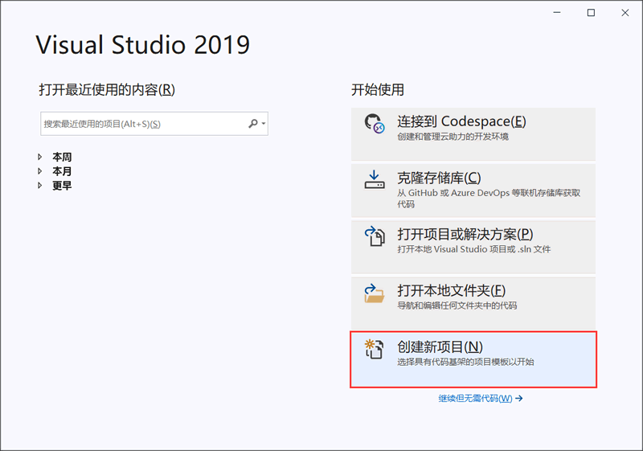
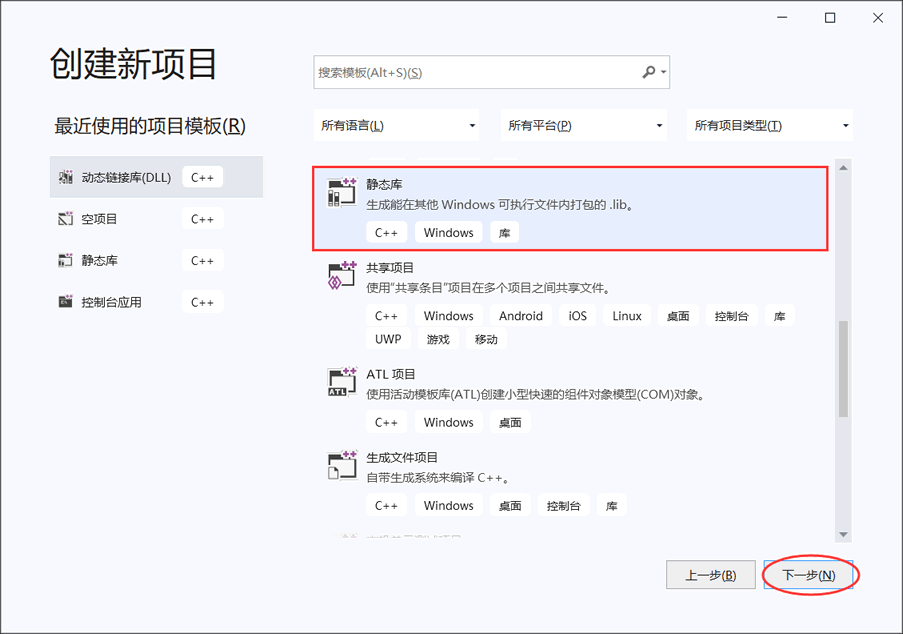
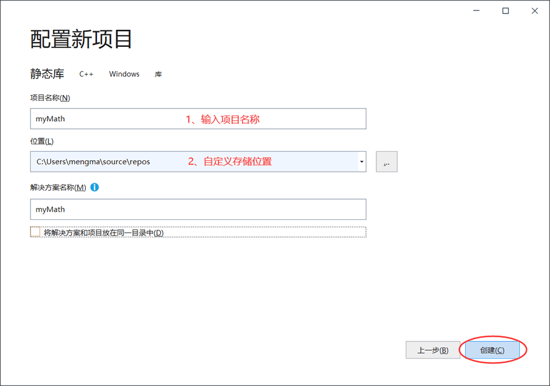
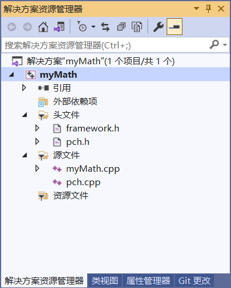
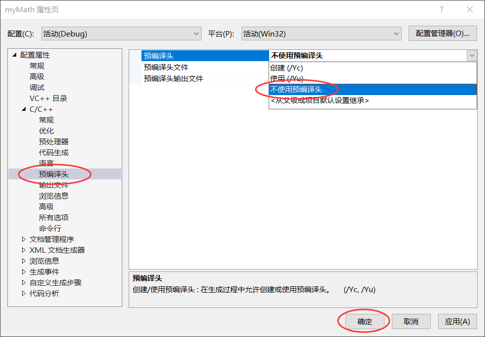
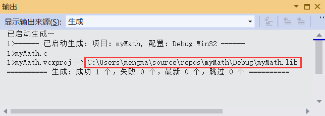
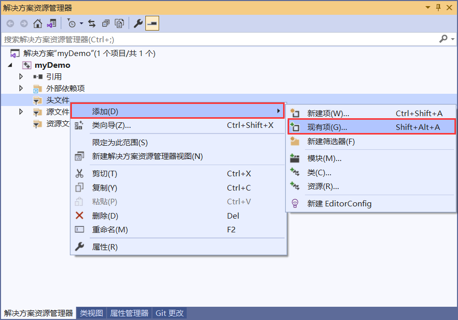

Windows下静态链接库的创建和使用
了解了什么是静态链接库之后，接下来就以 myMath.c 为例，教大家在 Windows 平台上创建一个静态链接库，并学会将他人分享的静态链接库引入到自己的项目中。
在 Windows 平台上创建静态链接库，我们选用的工具是 Visual Studio（简称 VS），它是微软发布的一款功能强大的 IDE（集成开发环境）。目前为止，VS 已经发布了多个版本，最新版本是 VS 2019，本节我们就以这个版本为例进行讲解，其它版本的操作方法也是类似的。
弹出的对话框如图 2 所示，选择“静态库”：
如图 3 所示，自定义所要创建的项目名和存储位置：
初始状态下，创建好的静态库项目中会自动包含以下几个文件：
图 4 所示的这些文件，我们只保留 myMath.c 源文件（将 myMath.cpp 的后缀名改为 .c），其它三个文件直接删除即可。在此基础上，我们需要创建 myMath.c 对应的头文件，以便向他人分享静态链接库时展示具体的功能和用法。
例如，在项目中添加 myMath.h 作为 myMath.c 对应的头文件，鼠标右击图 4 的“头文件”，依次选择“添加 -> 新建项”，弹出的对话框中选择“头文件(.h)”并自定义文件名称即可。最终，项目中仅有 myMath.h 和 myMath.c 两个文件。
注意，由于我们没有使用 VS 默认提供的 pch.h 等文件，需要修改一下 VS 的设置。在图 4 所示的窗口中右击项目名（本节自定义的项目名称为 myMath），选择“属性”，会弹出图 5 所示的对话框：
完成以上操作后，就可以向 myMath.c 和 myMath.h 中添加代码了。以《链接库是什么》一节中的 myMath.c 为例，将 add()、sub()、mul()、div() 的函数声明部分添加到 myMath.h 文件中，将定义部分添加到 myMath.c 文件中。
菜单栏中依次选择“生成 -> 生成 myMath”（项目名称可能不同），或者直接按 Ctrl+B 组合键，VS 显示图 6 所示的信息就表示成功创建好了静态链接库。
图 6 中重点标注的路径，表明了新生成的静态链接库的存储位置。可以看到，Windows 平台静态链接库文件的后缀名为 .lib。
1) 假设我们想在 myDemo 项目中使用 myMath.lib 静态链接库，首先要引入 myMath.h 头文件，具体做法是：将 myMath.h 文件拷贝到 myDemo 项目中，鼠标右键点击图 7 中的 "myDemo" 项目名，选择“在文件资源管理器中打开文件夹”，即可找到 myDemo 项目的存储位置。
同时，将 myMath.h 文件引入到 myDemo 项目中：
选择“现有项”后会打开另一个对话框，找到 myMath.h 文件并将其引入到当前项目中。成功引入后，图 7 中的头文件下会显示 myMath.h 文件。
2) 只引入 myMath.h 文件是远远不够的，.h 文件中各个函数的具体实现位于 myMath.lib 文件内，因此必须保证项目在链接阶段能成功找到 myMath.lib 文件。
一种较简单的方法是，用 #pragma 预处理指令指明要使用的静态链接库。假设 myMath.lib 的存储路径为 "D://myMath.lib"，则我们只需在 main.c 文件的开头加入以下代码：
例如，main.c 文件中的代码如下：
程序执行结果为：
在 Windows 平台上创建静态链接库，我们选用的工具是 Visual Studio（简称 VS），它是微软发布的一款功能强大的 IDE（集成开发环境）。目前为止，VS 已经发布了多个版本，最新版本是 VS 2019，本节我们就以这个版本为例进行讲解，其它版本的操作方法也是类似的。
静态链接库的创建
首先，打开 VS2019，选择“创建新项目”：

图 1 创建新项目
图 1 创建新项目
弹出的对话框如图 2 所示，选择“静态库”：

图 2 创建静态库项目
图 2 创建静态库项目
如图 3 所示，自定义所要创建的项目名和存储位置：

图 3 自定义项目的名称和存储位置
图 3 自定义项目的名称和存储位置
初始状态下，创建好的静态库项目中会自动包含以下几个文件：

图 4 初始状态下的静态库项目
图 4 初始状态下的静态库项目
图 4 所示的这些文件，我们只保留 myMath.c 源文件（将 myMath.cpp 的后缀名改为 .c），其它三个文件直接删除即可。在此基础上，我们需要创建 myMath.c 对应的头文件，以便向他人分享静态链接库时展示具体的功能和用法。
例如，在项目中添加 myMath.h 作为 myMath.c 对应的头文件，鼠标右击图 4 的“头文件”，依次选择“添加 -> 新建项”，弹出的对话框中选择“头文件(.h)”并自定义文件名称即可。最终，项目中仅有 myMath.h 和 myMath.c 两个文件。
注意，由于我们没有使用 VS 默认提供的 pch.h 等文件，需要修改一下 VS 的设置。在图 4 所示的窗口中右击项目名（本节自定义的项目名称为 myMath），选择“属性”，会弹出图 5 所示的对话框：

图 5 取消预编译头
图 5 取消预编译头
完成以上操作后，就可以向 myMath.c 和 myMath.h 中添加代码了。以《链接库是什么》一节中的 myMath.c 为例，将 add()、sub()、mul()、div() 的函数声明部分添加到 myMath.h 文件中，将定义部分添加到 myMath.c 文件中。
- //myMath.h
- //实现两个整数相加，返回它们的和
- int add(int a, int b);
- //实现两个整数相减，返回它们的差
- int sub(int a, int b);
- //实现两个整数相乘，返回它们的乘积
- int mul(int a, int b);
- //实现两个整数相除，返回它们的商
- int div(int a, int b);
- //myMath.c
- #include "myMath.h"
- int add(int a, int b) {
- return a + b;
- }
- int sub(int a, int b) {
- return a - b;
- }
- int mul(int a, int b) {
- return a * b;
- }
- int div(int a, int b) {
- if (b != 0) {
- return a / b;
- }
- return -1;
- }

图 6 成功创建静态链接库的提示信息
图 6 成功创建静态链接库的提示信息
图 6 中重点标注的路径，表明了新生成的静态链接库的存储位置。可以看到，Windows 平台静态链接库文件的后缀名为 .lib。
静态链接库的使用
项目中，无论是引用自己先前建好的静态链接库，还是他人分享的静态链接库，只需完成以下两个步骤（以建好的 myMath.lib 为例）：1) 假设我们想在 myDemo 项目中使用 myMath.lib 静态链接库，首先要引入 myMath.h 头文件，具体做法是：将 myMath.h 文件拷贝到 myDemo 项目中，鼠标右键点击图 7 中的 "myDemo" 项目名，选择“在文件资源管理器中打开文件夹”，即可找到 myDemo 项目的存储位置。
同时，将 myMath.h 文件引入到 myDemo 项目中：

图 7 项目中引入 .h 文件
图 7 项目中引入 .h 文件
选择“现有项”后会打开另一个对话框，找到 myMath.h 文件并将其引入到当前项目中。成功引入后，图 7 中的头文件下会显示 myMath.h 文件。
2) 只引入 myMath.h 文件是远远不够的，.h 文件中各个函数的具体实现位于 myMath.lib 文件内，因此必须保证项目在链接阶段能成功找到 myMath.lib 文件。
一种较简单的方法是，用 #pragma 预处理指令指明要使用的静态链接库。假设 myMath.lib 的存储路径为 "D://myMath.lib"，则我们只需在 main.c 文件的开头加入以下代码：
#pragma comment (lib,"D://myMath.lib")这行代码指明了 myMath.lib 静态链接库的存储位置，VS 就可以成功找到它。
例如，main.c 文件中的代码如下：
- #include <stdio.h>
- #include "myMath.h"
- #pragma comment(lib,"D://myMath.lib")
- int main()
- {
- int a = 3, b = 5;
- printf("a+b=%d\n", add(3, 5));
- printf("a-b=%d\n", sub(3, 5));
- printf("a*b=%d\n", mul(3, 5));
- printf("a/b=%d", div(3, 5));
- return 0;
- }
a+b=8
a-b=-2
a*b=15
a/b=0
关注微信公众号「站长严长生」，在手机上阅读所有教程，随时随地都能学习。本公众号由C语言中文网站长运营，每日更新，坚持原创，敢说真话，凡事有态度。

微信扫描二维码关注公众号